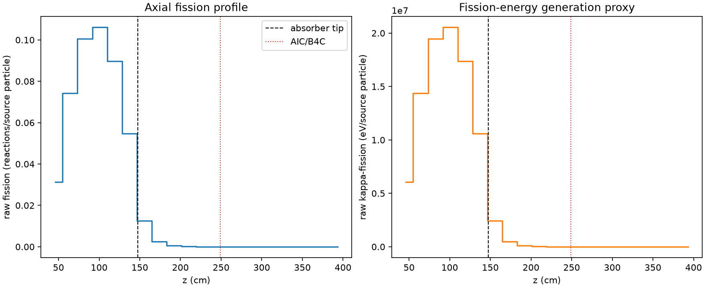
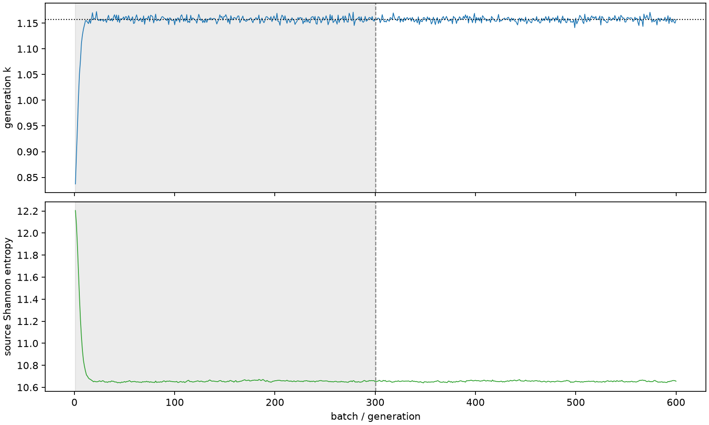

| field | value |
|---|---|
| experiment | V2-STAGE_128_OGRENCI_01-0020 |
| k | 1.1574017210705836 |
| MC standard error | 0.00018296885307052325 |
| seconds | 1079.2660650680045 |
| acceptance | not_assessed |
| convergence | review_required |
Completed is output integrity only; physical and statistical review required. Zero tallies do not prove zero production or zero uncertainty.
| diagnostic | value |
|---|---|
| geometric fuel voxels | 5280 |
| zero fission tally voxels | 1402 |
| low signal fuel voxels | 2631 |
| low signal fission share | 7.476767741661496e-05 |
| low signal kappa share | 7.480723398486312e-05 |
| important fission share | 0.9500442140457848 |
| previous filter included | 2649 |
| duration estimate s | 1562.5173488400023 |
| actual minus estimate s | -483.2512837719978 |
| fission relative MC error | statistics |
|---|---|
| all_geometric_fuel | {"voxels": 5280, "positive_mean_voxels": 3878, "zero_mean_voxels": 1402, "undefined_relative_error_voxels": 1402, "median": 0.027592297852895957, "p95": 0.9999999999999999, "maximum": 1.0000000000000002} |
| low_signal | {"voxels": 2631, "positive_mean_voxels": 1229, "zero_mean_voxels": 1402, "undefined_relative_error_voxels": 1402, "median": 0.6714740815966327, "p95": 1.0, "maximum": 1.0000000000000002} |
| important_95pct | {"voxels": 1516, "positive_mean_voxels": 1516, "zero_mean_voxels": 0, "undefined_relative_error_voxels": 0, "median": 0.005262829500876084, "p95": 0.008457955442993768, "maximum": 0.009772660409729938} |
| outside_previous_filter | {"voxels": 2631, "positive_mean_voxels": 1229, "zero_mean_voxels": 1402, "undefined_relative_error_voxels": 1402, "median": 0.6714740815966327, "p95": 1.0, "maximum": 1.0000000000000002} |
| kappa_fission relative MC error | statistics |
|---|---|
| all_geometric_fuel | {"voxels": 5280, "positive_mean_voxels": 3878, "zero_mean_voxels": 1402, "undefined_relative_error_voxels": 1402, "median": 0.02755200813139251, "p95": 0.9999999999999999, "maximum": 1.0000000000000002} |
| low_signal | {"voxels": 2631, "positive_mean_voxels": 1229, "zero_mean_voxels": 1402, "undefined_relative_error_voxels": 1402, "median": 0.6724032553910612, "p95": 1.0, "maximum": 1.0000000000000002} |
| important_95pct | {"voxels": 1516, "positive_mean_voxels": 1516, "zero_mean_voxels": 0, "undefined_relative_error_voxels": 0, "median": 0.005256849809389152, "p95": 0.008449101628578716, "maximum": 0.009760613489206142} |
| outside_previous_filter | {"voxels": 2631, "positive_mean_voxels": 1229, "zero_mean_voxels": 1402, "undefined_relative_error_voxels": 1402, "median": 0.6724032553910612, "p95": 1.0, "maximum": 1.0000000000000002} |
| axial bin | fission share | kappa-fission share |
|---|---|---|
| 1 | 0.06622700811347706 | 0.06622908703984952 |
| 2 | 0.1570737808481474 | 0.15707134837292194 |
| 3 | 0.21275203173581278 | 0.2127480437914749 |
| 4 | 0.2245341799805676 | 0.22453041952848143 |
| 5 | 0.1900819790678069 | 0.19007889579364975 |
| 6 | 0.11572384817257757 | 0.11572289771399011 |
| 7 | 0.026585982301662692 | 0.026594934803353048 |
| 8 | 0.005463893857392717 | 0.005466321255294697 |
| 9 | 0.0012108458463794443 | 0.0012114462288047923 |
| 10 | 0.0002689490095840579 | 0.00026906429921944106 |
| 11 | 5.9660358227401825e-05 | 5.968724248588496e-05 |
| 12 | 1.279472202722521e-05 | 1.2803711709356426e-05 |
| 13 | 2.807628550513363e-06 | 2.810364479747078e-06 |
| 14 | 1.1732289345991597e-06 | 1.1744475152468917e-06 |
| 15 | 7.739142140118146e-07 | 7.744177809575018e-07 |
| 16 | 2.5439864624650794e-07 | 2.5421918444932923e-07 |
| 17 | 3.681599187214108e-08 | 3.67698047836994e-08 |
| 18 | 0.0 | 0.0 |
| 19 | 0.0 | 0.0 |
| 20 | 0.0 | 0.0 |
Histories include the inactive-to-active transition at batch 300. kappa-fission approximates fission energy production, not total heat deposition.

